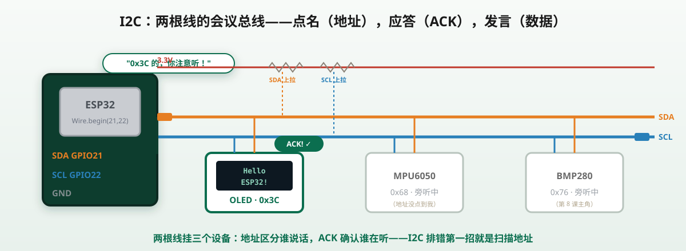

阶段三 · 通信 ｜ 难度：★★★★☆ ｜ 预计用时：50–60 分钟
本课材料：ESP32 开发板 ×1、USB 线 ×1、面包板、0.96 寸 OLED 显示屏（SSD1306，I2C 四针）×1、杜邦线若干 无硬件替代：Wokwi 搜索
OLED-SSD1306（或wokwi-oled-ssd1306），代码完全相同

你将做出：一块火柴盒大小的 OLED 屏亮起来，滚动显示 "Hello ESP32!" 和一行实时计数的数字——而它与芯片的全部连接只有 4 根线：3.3V、GND、SDA、SCL。
第 5 课的 UART 是"两块芯片一对一私聊"。但真实项目里你要挂的是一整排模块：屏幕、传感器、时钟、存储……一对一的电话线不够用了，需要一条"会议总线"——这就是 I2C。
本课学习目标（完成后你将拥有）：
第 5 课的 UART 有个结构性缺陷：一对一。你有 3 个传感器，就得 3 组 TX/RX、3 套串口——ESP32 的串口只有 3 个，而且每接一个新设备都要重新布线。
换一种思路：能不能让所有设备共用两根线，靠"名字"区分谁在说话？
这正是 I2C 的设计：
| UART（第 5 课） | I2C（本课） | |
|---|---|---|
| 线数 | 2 根（TX/RX）+ GND | 2 根（SDA/SCL） + GND + 电源 |
| 拓扑 | 一对一 | 一对多（一条总线挂一群设备） |
| 区分对象 | 靠物理连线 | 靠地址（7 位，0x03–0x77） |
| 时钟 | 双方约定波特率（异步） | 主机发时钟线打拍子（同步） |
| 典型场景 | 调试日志、GPS、蓝牙模块 | OLED、温湿度、姿态、EEPROM |
💡 一句话记住 I2C：两根线的"会议总线"——主机点名（地址），被点到的从机发言（数据），其他人旁听。
I2C（Inter-Integrated Circuit，芯片间总线） 只有两根信号线：
3.3V
│
[10kΩ] [10kΩ] ← 上拉电阻（模块上通常已焊好！）
│ │
├───────┤
│ │
SDA SCL
(数据) (时钟)
│ │
═══╪═══════╪═══════════════ 总线：所有设备并联在这两根线上
│ │
┌─┴─┐ ┌─┴─┐ ┌─┴─┐
│OLED│ │传感器│ │时钟 │ ← 每个设备都有自己的地址
│0x3C│ │0x44│ │0x68│
└────┘ └────┘ └────┘
主机（Master）与从机（Slave）：产生时钟、发起对话的是主机（ESP32 永远是主机）；被点名回应的是从机（OLED、传感器）。
一条总线挂十几个设备，数据广播出去所有人都听得见，怎么保证只有该理你的理你？
每个 I2C 从机出厂时（或由引脚配置）带一个 7 位地址。主机发数据前，先在总线上喊一遍地址："0x3C 的，你注意听！"——地址对上的从机才接管后续数据，其他人当没听见。
主机：[起始] 0x3C(地址) + W(写) ──→ 只有 OLED 认领，传感器们忽略
主机：[数据字节][数据字节]...
主机：[停止]
两个最常用的地址（背下来，本课、第 8 课都用）：
| 设备 | 地址 | 备注 |
|---|---|---|
| SSD1306 OLED（0.96 寸多数） | 0x3C | 有的板是 0x3D，扫不出来就换 |
| SSD1306 OLED（备用） | 0x3D | 地址引脚接 VCC 时 |
| （第 8 课主角，先预告）BMP280 | 0x76 / 0x77 | 由 SDO 引脚决定 |
| （第 8 课主角，先预告）MPU6050 | 0x68 / 0x69 | 由 AD0 引脚决定 |
🔑 "扫描地址"是 I2C 排错第一招：设备不响应？先让主机从 0x03 扫到 0x77，看谁应答。本课代码就带你写一个扫描器——这个技巧第 8 课接传感器时会直接复用。
一次完整 I2C 事务的"语法"，四步走：
起始(S) 地址+R/W 数据字节… 停止(P)
│ │ │ │
─┐ ┌─┐ ┌─┐ ┌─┐ ┌─┐ ┌─┐ ┌───
│ │ │ │ │ │ │ │ │ │ │ │ SDA
─┘ └─┘ └─┘ └─┘ └─┘ └─┘ └───
↑每个字节后有1位ACK（从机拉低应答"听到了"）
─────────────────────────────────────── SCL 由主机打拍子
为什么 I2C 慢不下来也快得有限？ 标准模式 100kHz、快速模式 400kHz——比 SPI（几 MHz）慢得多，因为地址、应答、时钟全挤在两根线上。够用（传感器、屏幕）但不适合刷彩屏大图——那是第 9 课 SPI 的地盘。
SSD1306 OLED 只有 4 个引脚，接线是全系列最简单的之一：
| OLED 引脚 | ESP32 引脚 | 说明 |
|---|---|---|
| VCC | 3V3 | 注意：多数模块标"3.3–5V"，但接 3V3 最稳 |
| GND | GND | 共地（第 5 课的教训） |
| SDA | GPIO21 | I2C 默认 SDA（⚠️ 第 1 课伏笔兑现） |
| SCL | GPIO22 | I2C 默认 SCL |
📌 ESP32 的 I2C 引脚可以重映射（像第 5 课的 Serial2 一样），但默认约定就是 SDA=21、SCL=22——照默认接，代码最省事。
Wokwi 方案：添加
OLED-SSD1306，四线接 3V3/GND/GPIO21/GPIO22。
// ============================================
// 第 7 课：I2C 入门 —— 地址扫描 + OLED 显示
// ============================================
#include <Wire.h> // I2C 库（Arduino 自带）
#include <Adafruit_GFX.h>
#include <Adafruit_SSD1306.h> // OLED 驱动（库管理器安装）
const int SDA_PIN = 21;
const int SCL_PIN = 22;
#define SCREEN_WIDTH 128
#define SCREEN_HEIGHT 64
#define OLED_ADDR 0x3C // 多数 0.96 寸模块的地址
Adafruit_SSD1306 display(SCREEN_WIDTH, SCREEN_HEIGHT, &Wire, -1);
unsigned long lastCount = 0;
int counter = 0;
void setup() {
Serial.begin(115200);
Wire.begin(SDA_PIN, SCL_PIN); // ① 启动 I2C，指定两根线
// —— 第一阶段：地址扫描（I2C 排错第一招）——
Serial.println("扫描 I2C 地址...");
for (byte addr = 1; addr < 127; addr++) {
Wire.beginTransmission(addr); // ② 对地址 addr 说话
if (Wire.endTransmission() == 0) { // ③ 有应答 = 设备存在
Serial.print("发现设备: 0x");
if (addr < 16) Serial.print("0");
Serial.println(addr, HEX);
}
}
// —— 第二阶段：点亮 OLED ——
if (!display.begin(SSD1306_SWITCHCAPVCC, OLED_ADDR)) {
Serial.println("OLED 初始化失败！检查接线/地址");
while (true) { delay(1000); } // 唯一允许的 delay：死等报错
}
display.clearDisplay();
display.setTextSize(2);
display.setTextColor(SSD1306_WHITE);
display.setCursor(0, 0);
display.println("Hello");
display.println("ESP32!");
display.display(); // ④ 刷新到屏幕（缓冲区机制）
}
void loop() {
if (millis() - lastCount >= 500) { // 每 500ms 更新计数
lastCount = millis();
counter++;
display.fillRect(0, 40, 128, 24, SSD1306_BLACK); // 只清计数区
display.setCursor(0, 40);
display.setTextSize(2);
display.print("n=");
display.print(counter);
display.display();
}
}
#include <Wire.h>
I2C 的标准库。Wire = 一根线缆，名字很形象。所有 I2C 操作都通过它。
Wire.begin(SDA_PIN, SCL_PIN);
启动 I2C 并指定引脚。必须在任何 Wire 操作之前调用。省略参数则用默认 21/22——写出来是为了让你知道"引脚是可配的"。
② Wire.beginTransmission(addr); + ③ Wire.endTransmission()
I2C 的"点名"动作：beginTransmission 说"我要对 addr 说话"，随后 write() 的数据都发给它，endTransmission() 收尾并返回应答状态——0 表示对方 ACK 了（设备存在）。地址扫描就是把 1~127 全点一遍名，谁应答记谁。这段代码第 8 课接传感器时原样复用。
④ display.display()——OLED 的"缓冲区"机制
这是新手最懵的一点：你写的 print 不会立刻上屏，而是先进内存缓冲区（RAM 里的 128×64 单色位图），调用 display.display() 才一次性刷到屏幕上。
💡 为什么要缓冲？因为 I2C 慢（400kHz）。如果每画一个像素传一次线，屏幕会卡成幻灯片。先在内存里画完，再一次传整幅——这是所有低速显示驱动的通用套路。同理，
clearDisplay()/fillRect也只是改内存，display()才算数。
fillRect(0, 40, 128, 24, BLACK)——局部刷新
每 500ms 只清"计数区"那一条，不整屏清——避免整屏闪烁。工程上"能局部刷新就不整屏刷新"。
唯一的一处 delay
while (true) { delay(1000); } 是初始化失败后的死等——程序没有别的事可做，阻塞反而正确。这正是第 3 课说的"delay 只许出现在我真的什么都不能做的场合"。
橙色脉冲是主机发出的地址帧：对上的设备（0x3C/0x68/0x76）把 SDA 拉低回一个 ACK，没对上的保持沉默（NACK）。这就是"地址扫描"——第 8 课接新传感器，第一件事仍是跑它。
上图是扫描器工作的完整过程：主机逐个点名，被点到的设备拉低 SDA 应答（ACK），没点到的保持沉默（NACK）。0x3C 应答的那一刻，你的 OLED 就在总线上。
Adafruit SSD1306 与 Adafruit GFX（库管理器搜索安装）发现设备: 0x3C（或 0x3D）Hello / ESP32!n=1,2,3… 每 500ms 递增，无整屏闪烁全部打勾 → 你打通了"一对多"总线通信，掌握了 I2C 排错第一招（地址扫描）。进入第 8 课。
OLED_ADDR 改成 0x3D，观察初始化失败；改回 0x3C 恢复。理解"地址错了 = 对方不理你"。setup() 里加 display.drawCircle(64, 32, 20, SSD1306_WHITE); display.display(); 画个圆——熟悉缓冲区机制后再画一个 fillTriangle。delay(50)，观察串口发现设备的节奏变慢——体会"点名"是一个个来的。| 现象 / 报错关键词 | 原因 | 解决办法 |
|---|---|---|
| 扫描一个设备都没有 | ① SDA/SCL 接反 ② 没共地 ③ 模块没上拉 | 对调 21/22；查 GND；模块 SDA/SCL 对 3V3 各接 10kΩ |
OLED 初始化失败 但扫描到 0x3D |
地址是 0x3D 不是 0x3C | 改 OLED_ADDR 为 0x3D（扫描结果说了算） |
| 扫描到 0x3C 但屏不亮 | 屏幕方向/供电问题 | 确认 VCC 接 3V3；换 display.setRotation(2) 试方向 |
| 屏幕有显示但全是乱码方块 | 库版本不匹配 / 初始化参数错 | 统一用 Adafruit SSD1306 + GFX 最新版 |
| 计数在跳但文字整屏闪 | 用了 clearDisplay() 整屏清 |
改用 fillRect 局部清（本课代码已示范） |
Wire.begin 编译报错 |
板型选错或库缺失 | 工具→开发板选 ESP32 Dev Module；装 Wire（自带） |
| I2C 读写偶发失败（扫描时有时无） | 线太长/接触不良/上拉太弱 | 换短杜邦线；插紧；上拉换 4.7kΩ |
| 接了多个设备后总线卡死 | 某设备把 SDA 拉死不放 | 逐个断开排查；复位所有设备（EN 键） |
屏幕会说话了，但显示的内容还是你写死的字符串。第 8 课：I2C 传感器实战——把温压传感器（BMP280）和姿态传感器（MPU6050）挂上同一条总线（是的，两根线同时挂三个设备，全靠地址区分），读出真实世界的温度、气压、姿态角，把传感器数据实时画到本课的 OLED 上。第 1 课引脚图里"IO21 = I2C SDA 传感器主角"的伏笔，到课正式回收；同时你会第一次遇到"数据校验"和"单位换算"两个工程话题。
本课程系列：从点亮一盏灯，到设计一台会自己思考的机器。